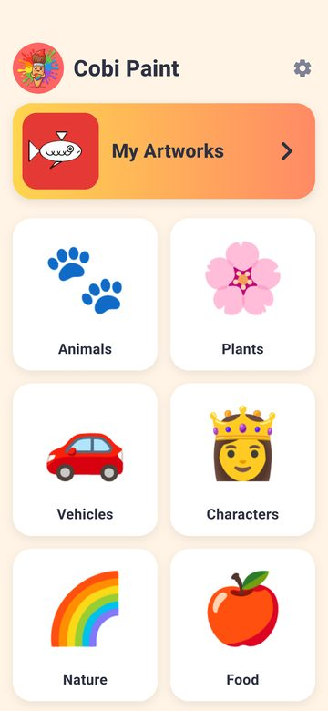
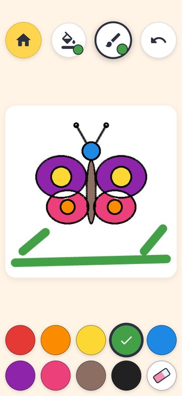
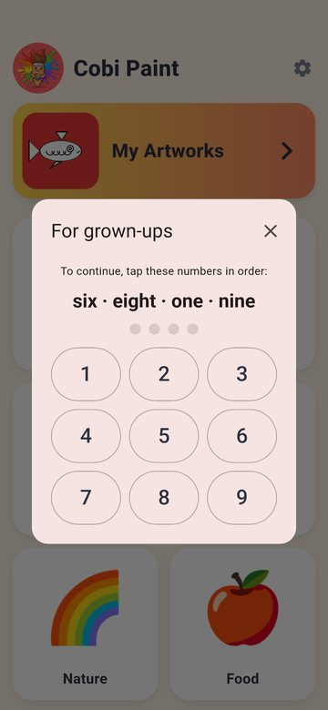
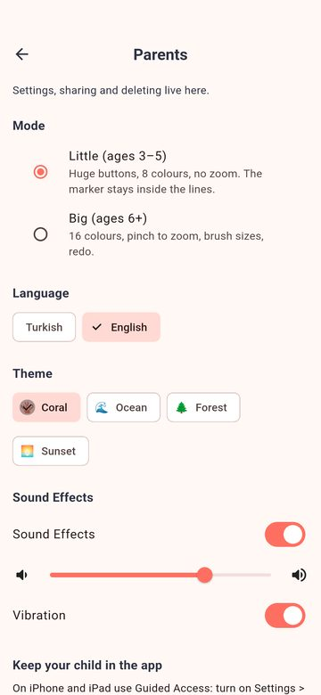
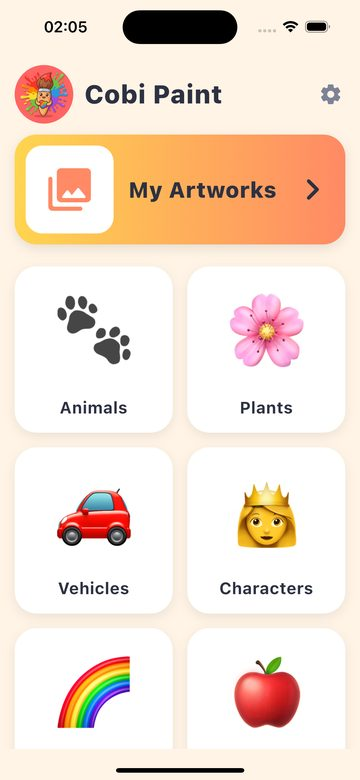
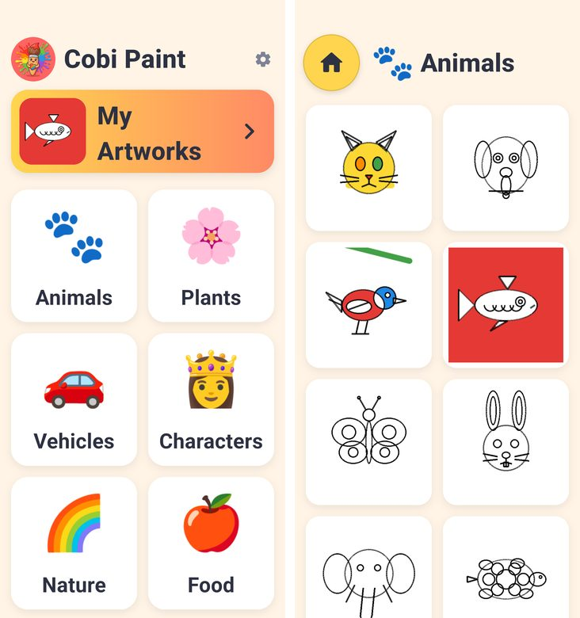
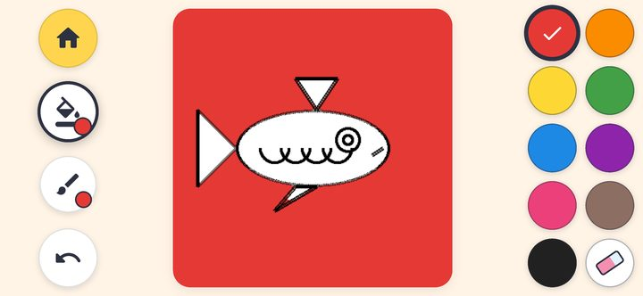
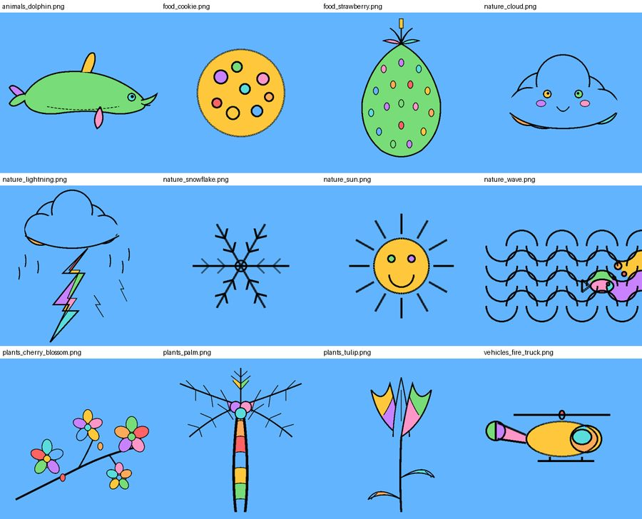

Uygulama yeni boyama motoruyla, 3 yaşına göre kurulmuş arayüzle ve Apple uyum düzeltmeleriyle çalışıyor. İş faz1/boyama-motoru branch'inde 11 yerel kod commit'i olarak duruyor. Mağazaya göndermeden önce senin yapman gereken adımlar bölüm 5'te.
fire_truck.png itfaiye değil, ikinci bir helikopter çiziyor. Yeni çizim hâlâ en büyük eksik.flutter analyze temiz, 71 test geçiyor. iOS simülatör ve Android derlemeleri geçiyor.Android ekranları CobiPaint_Pixel emülatöründen, iOS ekranı CobiPaint iPhone simülatöründen (iOS 18.5). Hepsi son derlemeden.








fire_truck helikopter çiziyor.Hepsi faz1/boyama-motoru'da; branch plan/yeniden-dogus'taki Faz 0 commit'inden (f3c362e) açıldı. Toplam fark: 77 dosya, +5.885 / −5.615 satır (raporlar hariç).
| Commit | Ne değişti | Ölçülen sonuç |
|---|---|---|
a94e631 | Bölge motoru ve boyama belgesi: 4 yönlü bölge etiketleme, boşluk kapatma, çizgi altına büyütme, isolate ve disk önbelleği; renk tablosu ve 100 adımlık geri al. | Sayfa başına 7–39 ms. Kedi yüzü tek bölge; pizza kabuğu ve gökkuşağı bantları ayrı. |
be8272b | Jest durum makinesi ve katmanlı tuval: kâğıt, dolgu, fırça, çizgi resim. | Dolgu parmak değdiği anda; ikinci parmak 150 ms içinde gelirse pinch (yalnız Büyük). |
7eadb40 | Yeni motor üstünde 3 yaş arayüzü: 82 pt kontroller, 9 renk + silgi, otomatik kayıt, kayıt formatı v2 ve eski kayıtların taşınması, ebeveyn kapısı, Ebeveynler alanı. | Emülatörde dolgu, fırça, silgi, geri al, otomatik kayıt, kaldığı yerden devam. |
a6b769c | HIG ve App Store uyumu: palet yerleşimi, renk rozeti, Reduce Motion, Sessiz mod, metin ölçeği, gizlilik manifesti, en/tr izin metinleri, kamera çentiği, krem açılış. | 4 kritik HIG açığı kapandı. iOS derlemesinde PrivacyInfo.xcprivacy ve iki InfoPlist.strings var; MinimumOSVersion 15.0. |
36d548d | Sayfa denetimi (PageCheck, tool/page_report.dart) ve testi. | 76 sayfa: 5 kullanılamaz, 13 zayıf, 58 iyi. |
d02d63a | Kullanılmayan 69 metin anahtarı silindi. | 121 anahtardan 52'si kaldı. |
a72c6e9 | cobi-toddler-ux proje skill'i; dokunma hedefi, etiket ve kontrast testleri. | Skill oturumda görünüyor. |
0eb2fad | Ebeveynler alanında Titreşim anahtarı. | Varsayılan açık; ayarla birlikte saklanıyor. |
21e333a | iOS'ta boyama ekranındayken üst ve alt kenar hareketi ertelenir. | Simülatörde derlenip açıldı; hareket elle denenmedi. |
18446e2 | Kontrast ve dil: kapı rakamları, üst çubuklar, tema adları, paylaşım metni, metinsiz açılış ekranı. | Kapı 2,22:1 → testten geçiyor; üst çubuk 2,73:1 → testten geçiyor. |
dba6ea5 | Minik modun açıklaması 8 değil 9 renk diyor. | — |
Raporlar ayrı bir commit'te: bu sayfa, UX raporu ve plan raporunun durum bölümü.
| Ne | Nasıl | Sonuç |
|---|---|---|
| Kod kalitesi | flutter analyze, flutter test | 0 bulgu, 71 test geçti |
| Erişilebilirlik kuralları | Flutter'ın dokunma hedefi, etiket ve kontrast kılavuz testleri, uygulamanın kendi temasıyla | Kontroller, kategori ekranı, kapı ve Ebeveynler alanı geçiyor |
| iOS paketi | Simülatör derlemesi + PlistBuddy | Derleme 28–44 sn; gizlilik dosyaları pakette; Light görünüm; iOS 15.0 |
| iOS açılışı | Ayrı CobiPaint iPhone simülatörü, ekran görüntüsü | Ana ekran açılıyor |
| Android akışları | CobiPaint_Pixel emülatörü (port 5580) | Ana ekran, kategori, dolgu, fırça, otomatik kayıt, kapı, Ebeveynler alanı, yatay düzen, %200 metin |
| Hazır sayfalar | tool/page_report.dart + bölge önizlemesi | 5 kullanılamaz, 13 zayıf |
Sıra, gönderimi engelleme derecesine göre.
flutter config --enable-uiscene-migration çalıştır. İkincisi global bir ayar olduğu için çalıştırmadım.store_listing.md'den gir; canlı açıklama artık olmayan galeriden içe aktarmayı vaat ediyor. Yaş derecesi anketini ve social media sorusunu doldur. Gizlilik etiketi "Data Not Collected".docs/'u yeni sürümle birlikte yayınla. Önce push edersen app-ads.txt silindiği için yayındaki reklamlı sürümün reklam doğrulaması bozulur. Yeni gizlilik politikası da yayındaki sürümle çelişir.app-store-review-skill (katalog dışı), Flutter Skills'ten 5 skill (kopyala), Dart and Flutter plugin'i. Plugin'den önce PATH'teki Homebrew dart 3.8'i kaldır ya da Flutter'ın dart'ını öne al.faz1/boyama-motoru, plan/yeniden-dogus'u da içeriyor. Hazır olunca master'a PR aç.| İş | Neden önemli | Önerilen yol |
|---|---|---|
| Sesli yönlendirme | Ç1: 3 yaş okumaz. HIG kapıda sesli uyarı öneriyor. | Seslendirme kaydı ya da cihazın konuşma motoru (flutter_tts, yeni bağımlılık). macOS say çıktısı lisans gereği dağıtılamaz. |
| Yeni çizimler | Kullanıcı şikâyeti: resim az ve çirkin. 18 sayfa zayıf ya da kullanılamaz. | İllüstratör + AI eskiz; her yeni sayfa tool/page_report.dart'tan geçer. |
| Hareketsizlik ipucu | İlk kez açan çocuk ne yapacağını bilmeyebilir. | 3 sn işlem yoksa bir el bir bölgeyi doldurur; en fazla iki kez. |
| Diğer fırçalar | Faz 2'nin ikinci yarısı. | Kurşun kalem, pastel, sprey, glitter, gökkuşağı, neon. |
| iPad ayrıntıları | HIG 8 ve 12. | Cmd-Z kısayolu, 3 parmak düzenleme menüsünü kapatma, Windowed mod denemesi. |
| Entegrasyon testi | Uygulamanın tamamını açan test yok. | integration_test ile ana ekran → sayfa → dolgu → eve dönüş. |
| Tasarım sistemi | Faz 3: yazı tipi, ikon seti, maskot. | design:design-system skill'iyle. |
emulator-5554) ve açık duran iPhone 16 simülatörüne dokunmadım. Testler için CobiPaint_Pixel emülatörünü (port 5580) kullandım ve CobiPaint iPhone simülatörünü oluşturdum (iOS 18.5, UDID 15D6AEE9-8781-4319-B6AF-AA7253342616).emulator -avd CobiPaint_Pixel -port 5580. iOS: xcrun simctl boot 15D6AEE9-8781-4319-B6AF-AA7253342616, sonra open -a Simulator.android/ içinde ./gradlew app:assembleDebug -Ptarget-platform=android-arm64 --no-daemon çalışıyor.